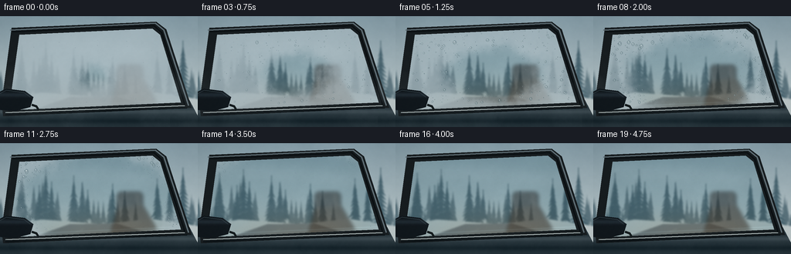
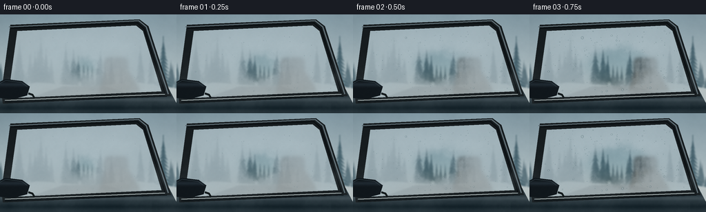
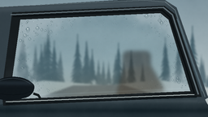

CODING AGENTS AS PIXEL WORLD MODELS
traex/GPT-6.1-Sol · phygen_102
点击播放 · 原生 RGB 像素
逐轮保存的候选
回放视频、检查图与代码变化。
每份候选均可单独播放。实际图片检查记录在下方工具轨迹中。
候选 01播放与检查图
点击播放 · 原生 RGB 像素

展开代码变化
--- 上一保存版本
+++ 本次保存版本
@@ -0,0 +1,178 @@
+from pathlib import Path
+import math
+import numpy as np
+from PIL import Image, ImageDraw, ImageFilter
+import artifact_io
+
+ROOT = Path(__file__).resolve().parent
+W, H, SCALE = 256, 144, 3
+w,h = W*SCALE,H*SCALE
+rng = np.random.default_rng(9021)
+Y,X = np.mgrid[0:h,0:w].astype(np.float32)
+x,y=X/SCALE,Y/SCALE
+
+def arr(im): return np.asarray(im.convert('RGB'),dtype=np.float32)
+def image(a): return Image.fromarray(np.uint8(np.clip(a,0,255)))
+def noise(seed, scales=(8,20,55,130), weights=(.46,.29,.17,.08)):
+ rr=np.random.default_rng(seed); out=np.zeros((h,w),np.float32)
+ for n,weight in zip(scales,weights):
+ data=np.uint8(rr.random((max(2,round(n*h/w)),n))*255)
+ out+=np.asarray(Image.fromarray(data).resize((w,h),Image.Resampling.BICUBIC),np.float32)/255*weight
+ return out
+N=noise(61)
+N2=noise(23,(4,13,39,90),(.42,.32,.18,.08))
+def poly_mask(points):
+ im=Image.new('L',(w,h)); ImageDraw.Draw(im).polygon([(int(a*SCALE),int(b*SCALE)) for a,b in points],fill=255)
+ return np.asarray(im,dtype=np.float32)/255
+
+def line(draw, pts, fill, width):
+ draw.line([(int(a*SCALE),int(b*SCALE)) for a,b in pts],fill=fill,width=max(1,int(width*SCALE)),joint='curve')
+def polygon(draw,pts,fill): draw.polygon([(int(a*SCALE),int(b*SCALE)) for a,b in pts],fill=fill)
+
+# Cold roadside beyond the glass: overcast sky and layered distant conifers.
+sky=np.zeros((h,w,3),np.float32)
+top=np.array([133,157,168]);bottom=np.array([193,206,208])
+a=np.clip(y/116,0,1)[...,None]; sky=top*(1-a)+bottom*a
+sky += (N[...,None]-.5)*11
+forest=image(sky); d=ImageDraw.Draw(forest)
+for layer,count in [(0,28),(1,18)]:
+ for j in range(count):
+ tx=float(rng.uniform(-15,270)); base=float(rng.uniform(97,116)); height=float(rng.uniform(36,83))*(.7+layer*.3)
+ col=(92+layer*-22,117+layer*-18,127+layer*-16)
+ line(d,[(tx,base-height),(tx,base+1)],col,0.65+layer*.35)
+ for k in range(12):
+ yy=base-height+(k+2)/14*height
+ reach=(k+2)/14*height*float(rng.uniform(.13,.21))
+ polygon(d,[(tx,yy-5),(tx-reach,yy+5),(tx,yy+1),(tx+reach,yy+5)],col)
+ if k%3==0:
+ line(d,[(tx-reach*.85,yy+3.8),(tx,yy),(tx+reach*.75,yy+3)],(152-layer*14,168-layer*12,173-layer*10),.6)
+# Snow banks and a muted roadway.
+polygon(d,[(-5,109),(54,99),(134,105),(195,98),(265,109),(265,144),(-5,144)],(194,205,206))
+polygon(d,[(-20,144),(90,105),(150,104),(282,144)],(107,121,129))
+line(d,[(108,111),(84,122),(48,141)],(161,171,173),.5)
+forest=forest.filter(ImageFilter.GaussianBlur(1.05*SCALE))
+background=arr(forest)
+
+# Large front side window with curved seals and a metallic door beneath it.
+outer=[(15,15),(202,7),(215,17),(248,119),(4,130),(2,113)]
+pane=[(25,24),(197,16),(207,24),(234,112),(14,122),(15,96)]
+mask=poly_mask(pane)
+base=background.copy()
+bodymask=poly_mask([(-5,120),(245,109),(264,145),(-5,145)])
+metal= np.zeros((h,w,3),np.float32)
+metal[:]=[39,53,60]
+metal += (20*np.exp(-((y-124)/3)**2)-16*np.exp(-((y-136)/4)**2))[...,None]
+metal+=(N[...,None]-.5)*6
+base=base*(1-bodymask[...,None])+metal*bodymask[...,None]
+baseim=image(base); bd=ImageDraw.Draw(baseim)
+polygon(bd,outer,(23,29,32))
+# Bright reflected sky tracing the curved upper perimeter.
+line(bd,[(13,18),(201,9),(212,18),(244,116)],(98,113,120),1.7)
+line(bd,[(16,20),(199,12),(209,21),(239,115)],(11,16,19),2)
+line(bd,[(7,125),(239,116)],(164,180,183),1.4)
+line(bd,[(7,128),(242,119)],(9,16,20),1.7)
+line(bd,[(9,125),(238,116)],(228,230,222),.45)
+base=arr(baseim)
+# Glass transmits forest while catching sky reflections; cabin is subtly warm.
+glass=background*np.array([.73,.79,.81])+np.array([12,15,15])
+# Muted upholstered seat and headrest glimpsed through the pane.
+cabin=Image.new('RGBA',(w,h),(0,0,0,0)); cd=ImageDraw.Draw(cabin)
+cd.rounded_rectangle((int(151*SCALE),int(63*SCALE),int(185*SCALE),int(87*SCALE)),radius=6*SCALE,fill=(35,37,37,140))
+polygon(cd,[(151,84),(185,80),(204,113),(143,118)],(44,39,33,140))
+line(cd,[(177,65),(179,82)],(128,108,85,80),.7)
+cabin=cabin.filter(ImageFilter.GaussianBlur(2.3*SCALE)); ca=np.asarray(cabin,dtype=np.float32)
+glass=glass*(1-ca[:,:,3:4]/255)+ca[:,:,:3]*(ca[:,:,3:4]/255)
+# Low interior heater glow and a wide, subtle sky reflection on the window.
+heat=np.exp(-(((x-126)/81)**2+((y-120)/27)**2))
+glass=glass*(1-.19*heat[...,None])+np.array([186,133,77])*.19*heat[...,None]
+reflection=np.exp(-((y-(31+.08*x))/13)**2)*.12
+reflection*=.75+.25*N
+glass=glass*(1-reflection[...,None])+np.array([194,211,216])*reflection[...,None]
+# Double-pane faint reflection along the bottom edge.
+glass += np.exp(-((y-(119-.045*x))/1.0)**2)[...,None]*np.array([8,11,12])
+blurred=arr(image(glass).filter(ImageFilter.GaussianBlur(8*SCALE)))
+
+# The mist film has irregular thickness; a heated clear patch grows organically.
+# This construction fixes texture to the glass while the airborne bank drifts past.
+distance=np.sqrt(((x-126)/109)**2+((y-75)/65)**2)
+irregular=distance+(N-.5)*.25+(N2-.5)*.17
+# Hundreds of deposited microbeads, most remaining around the cool perimeter.
+droplets=[]
+for i in range(630):
+ dx=float(rng.uniform(17,235)); dy=float(rng.uniform(19,123))
+ if mask[min(h-1,int(dy*SCALE)),min(w-1,int(dx*SCALE))]<.5: continue
+ radius=float(np.clip(rng.lognormal(-.54,.62),.23,2.1))
+ if i<24: radius=float(rng.uniform(1.2,2.35))
+ droplets.append((dx,dy,radius,float(rng.uniform(.03,.39)),float(rng.uniform(.8,1.35))))
+
+# Foreground side mirror, with a softly highlighted black casing.
+mirror_mask=Image.new('L',(w,h)); md=ImageDraw.Draw(mirror_mask)
+md.rounded_rectangle((0,99*SCALE,42*SCALE,124*SCALE),radius=9*SCALE,fill=255)
+# Angled mirror shape instead of a flat emblem.
+mirror_mask=Image.new('L',(w,h)); md=ImageDraw.Draw(mirror_mask)
+polygon(md,[(-9,102),(8,94),(32,97),(43,105),(39,118),(20,123),(-9,121)],255)
+mm=np.asarray(mirror_mask,dtype=np.float32)/255
+mir=np.zeros((h,w,3),np.float32)
+mir[:]=[18,25,30]
+mir+=(19*np.exp(-((y-102)/3)**2))[...,None]*np.array([.78,.95,1.1])
+mir+=(N[...,None]-.5)*3
+
+frames=[]
+for index in range(20):
+ t=index/19
+ # Heat dissipates suspended droplets at the center, revealing forest and cabin.
+ clear_radius=.12+1.38*(t**.88)
+ stillfog=1/(1+np.exp(np.clip((clear_radius-irregular)*18,-50,50)))
+ initial_veil=.80-.14*t
+ opacity=(initial_veil*stillfog+.025)*mask
+ cloudcolor=np.stack([179+9*N,193+8*N,199+8*N],axis=-1)
+ obscured=blurred*.18+cloudcolor*.82
+ pane_rgb=glass*(1-opacity[...,None])+obscured*opacity[...,None]
+ # Mist carried sideways against the outer face of the glass, not a wipe.
+ shift=int((-36+82*t)*SCALE)
+ drift=np.roll(N2,shift,axis=1)
+ bank=np.exp(-((y-(78+10*math.sin(t*4)+(x-125)*.11))/24)**2)
+ air=(.055+.12*(1-t))*bank*np.clip((drift-.32)*2.1,0,1)
+ pane_rgb=pane_rgb*(1-air[...,None])+np.array([193,207,211])*air[...,None]
+ frame=base*(1-mask[...,None])+pane_rgb*mask[...,None]
+ # Condensed fog beads grow briefly, then evaporate from the warm center;
+ # the larger edge beads coalesce and creep down the outside surface.
+ beads=Image.new('RGBA',(w,h),(0,0,0,0)); dd=ImageDraw.Draw(beads)
+ for j,(dx,dy,r,birth,stretch) in enumerate(droplets):
+ growth=np.clip((t-birth+.13)/.32,0,1)
+ local=math.sqrt(((dx-126)/109)**2+((dy-75)/65)**2)
+ dryness=1/(1+math.exp(np.clip((clear_radius-local-.09)*15,-40,40)))
+ survive=.08+.92*dryness
+ size=r*growth*math.sqrt(survive)
+ if size<.17: continue
+ fall=max(0,t-.43)*max(0,r-1.1)*8.0*dryness
+ yy=dy+fall; xx=dx+.24*math.sin(j)*fall
+ if yy>118-.045*xx: continue
+ u=xx*SCALE; v=yy*SCALE; rx=size*SCALE; ry=rx*stretch*(1+.12*fall)
+ a=int(135*growth*survive)
+ # A translucent refractive bead: dark meniscus, clear center, bottom lens
+ # caustic, and a tiny upper-left glint reflecting the winter sky.
+ dd.ellipse((u-rx,v-ry,u+rx,v+ry),fill=(83,111,118,int(a*.40)),outline=(28,58,68,a),width=max(1,int(.24*SCALE)))
+ if rx>1.2:
+ dd.arc((u-rx*.76,v-ry*.74,u+rx*.76,v+ry*.78),25,143,fill=(209,225,228,int(a*1.25)),width=max(1,int(.27*SCALE)))
+ dd.ellipse((u-rx*.50,v-ry*.52,u-rx*.10,v-ry*.14),fill=(236,247,245,int(a*1.52)))
+ if fall>1.7:
+ line(dd,[(xx-.1,dy),(xx,yy-size)],(141,173,181,int(28*survive)),.42)
+ ba=np.asarray(beads,dtype=np.float32); balpha=ba[:,:,3:4]/255*mask[...,None]
+ frame=frame*(1-balpha)+ba[:,:,:3]*balpha
+ # Cold atmospheric mist outside the window drifts over the door and seal.
+ outair=(.11*(1-t)+.02)*np.exp(-((y-101)/41)**2)*np.clip((drift-.30)*2,0,1)*(1-mask*.80)
+ frame=frame*(1-outair[...,None])+np.array([181,199,205])*outair[...,None]
+ frame=frame*(1-mm[...,None])+mir*mm[...,None]
+ im=image(frame); ed=ImageDraw.Draw(im)
+ line(ed,[(-3,102),(8,96),(31,99),(39,105)],(82,100,107),.65)
+ line(ed,[(41,115),(47,117),(50,122)],(22,29,31),3)
+ # Very subtle optics and sensor texture; coherent fine texture across time.
+ f=arr(im)
+ vignette=1-.075*(((x-130)/165)**2+((y-69)/105)**2)
+ f*=vignette[...,None]
+ f+=(noise(204,(100,200),(.45,.55))-.5)[...,None]*2.0
+ out=image(f).resize((W,H),Image.Resampling.LANCZOS)
+ frames.append(np.asarray(out,dtype=np.uint8))
+artifact_io.save(np.stack(frames),ROOT)
+print('Saved 20 RGB frames at 256 x 144, 4 fps.')
候选 02播放与检查图
点击播放 · 原生 RGB 像素


展开代码变化
--- 上一保存版本
+++ 本次保存版本
@@ -64,7 +64,17 @@
metal += (20*np.exp(-((y-124)/3)**2)-16*np.exp(-((y-136)/4)**2))[...,None]
metal+=(N[...,None]-.5)*6
base=base*(1-bodymask[...,None])+metal*bodymask[...,None]
+# The roof rail and pillars join the glass to a continuous car body.
+coach=poly_mask([(-6,9),(178,-2),(203,0),(217,9),(256,120),(244,127),(207,20),(198,11),(-6,21)])
+leftpillar=poly_mask([(-5,13),(21,15),(9,126),(-5,130)])
+coach=np.maximum(coach,leftpillar)
+coach_color=np.zeros((h,w,3),np.float32);coach_color[:]=[55,69,77]
+coach_color+=(13*np.exp(-((y-(11-.04*x))/4)**2))[...,None]
+coach_color+=(N[...,None]-.5)*4
+base=base*(1-coach[...,None])+coach_color*coach[...,None]
baseim=image(base); bd=ImageDraw.Draw(baseim)
+line(bd,[(-1,8),(178,0),(203,2),(215,12),(252,119)],(127,145,151),.75)
+line(bd,[(218,23),(249,112)],(85,106,116),1.7)
polygon(bd,outer,(23,29,32))
# Bright reflected sky tracing the curved upper perimeter.
line(bd,[(13,18),(201,9),(212,18),(244,116)],(98,113,120),1.7)
@@ -110,7 +120,10 @@
md.rounded_rectangle((0,99*SCALE,42*SCALE,124*SCALE),radius=9*SCALE,fill=255)
# Angled mirror shape instead of a flat emblem.
mirror_mask=Image.new('L',(w,h)); md=ImageDraw.Draw(mirror_mask)
-polygon(md,[(-9,102),(8,94),(32,97),(43,105),(39,118),(20,123),(-9,121)],255)
+def curve(p0,p1,p2,p3,n=20):
+ return [tuple((1-t)**3*np.array(p0)+3*(1-t)**2*t*np.array(p1)+3*(1-t)*t*t*np.array(p2)+t**3*np.array(p3)) for t in np.linspace(0,1,n)]
+mirror_shape=curve((-9,103),(2,92),(28,92),(38,101))+curve((38,101),(47,106),(40,118),(32,120))+curve((32,120),(13,126),(2,122),(-9,121))
+polygon(md,mirror_shape,255)
mm=np.asarray(mirror_mask,dtype=np.float32)/255
mir=np.zeros((h,w,3),np.float32)
mir[:]=[18,25,30]
@@ -165,7 +178,8 @@
frame=frame*(1-outair[...,None])+np.array([181,199,205])*outair[...,None]
frame=frame*(1-mm[...,None])+mir*mm[...,None]
im=image(frame); ed=ImageDraw.Draw(im)
- line(ed,[(-3,102),(8,96),(31,99),(39,105)],(82,100,107),.65)
+ line(ed,curve((-4,101),(8,94),(28,95),(37,103)),(82,100,107),.65)
+ line(ed,curve((-2,115),(15,118),(32,117),(37,112)),(6,12,16),.55)
line(ed,[(41,115),(47,117),(50,122)],(22,29,31),3)
# Very subtle optics and sensor texture; coherent fine texture across time.
f=arr(im)
候选 03播放与检查图
可观测工具轨迹
实际执行的命令与返回图片。
命令 1exit 0
/bin/bash -lc 'ls -la && cat prompt.txt && cat GENERATION_RULES.md && cat task_spec.json'
命令 2exit 0
/bin/bash -lc "cat artifact_io.py && python - <<'PY'
import PIL,numpy
print('Pillow and NumPy available')
PY"命令 3exit 0
/bin/bash -lc "cat > generate.py <<'PY'
from pathlib import Path
import math
import numpy as np
from PIL import Image, ImageDraw, ImageFilter
import artifact_io
ROOT = Path(__file__).resolve().parent
W, H, SCALE = 256, 144, 3
w,h = W*SCALE,H*SCALE
rng = np.random.default_rng(9021)
Y,X = np.mgrid[0:h,0:w].astype(np.float32)
x,y=X/SCALE,Y/SCALE
def arr(im): return np.asarray(im.convert('RGB'),dtype=np.float32)
def image(a): return Image.fromarray(np.uint8(np.clip(a,0,255)))
def noise(seed, scales=(8,20,55,130), weights=(.46,.29,.17,.08)):
rr=np.random.default_rng(seed); out=np.zeros((h,w),np.float32)
for n,weight in zip(scales,weights):
data=np.uint8(rr.random((max(2,round(n*h/w)),n))*255)
out+=np.asarray(Image.fromarray(data).resize((w,h),Image.Resampling.BICUBIC),np.float32)/255*weight
return out
N=noise(61)
N2=noise(23,(4,13,39,90),(.42,.32,.18,.08))
def poly_mask(points):
im=Image.new('L',(w,h)); ImageDraw.Draw(im).polygon([(int(a*SCALE),int(b*SCALE)) for a,b in points],fill=255)
return np.asarray(im,dtype=np.float32)/255
def line(draw, pts, fill, width):
draw.line([(int(a*SCALE),int(b*SCALE)) for a,b in pts],fill=fill,width=max(1,int(width*SCALE)),joint='curve')
def polygon(draw,pts,fill): draw.polygon([(int(a*SCALE),int(b*SCALE)) for a,b in pts],fill=fill)
# Cold roadside beyond the glass: overcast sky and layered distant conifers.
sky=np.zeros((h,w,3),np.float32)
top=np.array([133,157,168]);bottom=np.array([193,206,208])
a=np.clip(y/116,0,1)[...,None]; sky=top*(1-a)+bottom*a
sky += (N[...,None]-.5)*11
forest=image(sky); d=ImageDraw.Draw(forest)
for layer,count in [(0,28),(1,18)]:
for j in range(count):
tx=float(rng.uniform(-15,270)); base=float(rng.uniform(97,116)); height=float(rng.uniform(36,83))*(.7+layer*.3)
col=(92+layer*-22,117+layer*-18,127+layer*-16)
line(d,[(tx,base-height),(tx,base+1)],col,0.65+layer*.35)
for k in range(12):
yy=base-height+(k+2)/14*height
reach=(k+2)/14*height*float(rng.uniform(.13,.21))
polygon(d,[(tx,yy-5),(tx-reach,yy+5),(tx,yy+1),(tx+reach,yy+5)],col)
if k%3==0:
line(d,[(tx-reach*.85,yy+3.8),(tx,yy),(tx+reach*.75,yy+3)],(152-layer*14,168-layer*12,173-layer*10),.6)
# Snow banks and a muted roadway.
polygon(d,[(-5,109),(54,99),(134,105),(195,98),(265,109),(265,144),(-5,144)],(194,205,206))
polygon(d,[(-20,144),(90,105),(150,104),(282,144)],(107,121,129))
line(d,[(108,111),(84,122),(48,141)],(161,171,173),.5)
forest=forest.filter(ImageFilter.GaussianBlur(1.05*SCALE))
background=arr(forest)
# Large front side window with curved seals and a metallic door beneath it.
outer=[(15,15),(202,7),(215,17),(248,119),(4,130),(2,113)]
pane=[(25,24),(197,16),(207,24),(234,112),(14,122),(15,96)]
mask=poly_mask(pane)
base=background.copy()
bodymask=poly_mask([(-5,120),(245,109),(264,145),(-5,145)])
metal= np.zeros((h,w,3),np.float32)
metal[:]=[39,53,60]
metal += (20*np.exp(-((y-124)/3)**2)-16*np.exp(-((y-136)/4)**2))[...,None]
metal+=(N[...,None]-.5)*6
base=base*(1-bodymask[...,None])+metal*bodymask[...,None]
baseim=image(base); bd=ImageDraw.Draw(baseim)
polygon(bd,outer,(23,29,32))
# Bright reflected sky tracing the curved upper perimeter.
line(bd,[(13,18),(201,9),(212,18),(244,116)],(98,113,120),1.7)
line(bd,[(16,20),(199,12),(209,21),(239,115)],(11,16,19),2)
line(bd,[(7,125),(239,116)],(164,180,183),1.4)
line(bd,[(7,128),(242,119)],(9,16,20),1.7)
line(bd,[(9,125),(238,116)],(228,230,222),.45)
base=arr(baseim)
# Glass transmits forest while catching sky reflections; cabin is subtly warm.
glass=background*np.array([.73,.79,.81])+np.array([12,15,15])
# Muted upholstered seat and headrest glimpsed through the pane.
cabin=Image.new('RGBA',(w,h),(0,0,0,0)); cd=ImageDraw.Draw(cabin)
cd.rounded_rectangle((int(151*SCALE),int(63*SCALE),int(185*SCALE),int(87*SCALE)),radius=6*SCALE,fill=(35,37,37,140))
polygon(cd,[(151,84),(185,80),(204,113),(143,118)],(44,39,33,140))
line(cd,[(177,65),(179,82)],(128,108,85,80),.7)
cabin=cabin.filter(ImageFilter.GaussianBlur(2.3*SCALE)); ca=np.asarray(cabin,dtype=np.float32)
glass=glass*(1-ca[:,:,3:4]/255)+ca[:,:,:3]*(ca[:,:,3:4]/255)
# Low interior heater glow and a wide, subtle sky reflection on the window.
heat=np.exp(-(((x-126)/81)**2+((y-120)/27)**2))
glass=glass*(1-.19*heat[...,None])+np.array([186,133,77])*.19*heat[...,None]
reflection=np.exp(-((y-(31+.08*x))/13)**2)*.12
reflection*=.75+.25*N
glass=glass*(1-reflection[...,None])+np.array([194,211,216])*reflection[...,None]
# Double-pane faint reflection along the bottom edge.
glass += np.exp(-((y-(119-.045*x))/1.0)**2)[...,None]*np.array([8,11,12])
blurred=arr(image(glass).filter(ImageFilter.GaussianBlur(8*SCALE)))
# The mist film has irregular thickness; a heated clear patch grows organically.
# This construction fixes texture to the glass while the airborne bank drifts past.
distance=np.sqrt(((x-126)/109)**2+((y-75)/65)**2)
irregular=distance+(N-.5)*.25+(N2-.5)*.17
# Hundreds of deposited microbeads, most remaining around the cool perimeter.
droplets=[]
for i in range(630):
dx=float(rng.uniform(17,235)); dy=float(rng.uniform(19,123))
if mask[min(h-1,int(dy*SCALE)),min(w-1,int(dx*SCALE))]<.5: continue
radius=float(np.clip(rng.lognormal(-.54,.62),.23,2.1))
if i<24: radius=float(rng.uniform(1.2,2.35))
droplets.append((dx,dy,radius,float(rng.uniform(.03,.39)),float(rng.uniform(.8,1.35))))
# Foreground side mirror, with a softly highlighted black casing.
mirror_mask=Image.new('L',(w,h)); md=ImageDraw.Draw(mirror_mask)
md.rounded_rectangle((0,99*SCALE,42*SCALE,124*SCALE),radius=9*SCALE,fill=255)
# Angled mirror shape instead of a flat emblem.
mirror_mask=Image.new('L',(w,h)); md=ImageDraw.Draw(mirror_mask)
polygon(md,[(-9,102),(8,94),(32,97),(43,105),(39,118),(20,123),(-9,121)],255)
mm=np.asarray(mirror_mask,dtype=np.float32)/255
mir=np.zeros((h,w,3),np.float32)
mir[:]=[18,25,30]
mir+=(19*np.exp(-((y-102)/3)**2))[...,None]*np.array([.78,.95,1.1])
mir+=(N[...,None]-.5)*3
frames=[]
for index in range(20):
t=index/19
# Heat dissipates suspended droplets at the center, revealing forest and cabin.
clear_radius=.12+1.38*(t**.88)
stillfog=1/(1+np.exp(np.clip((clear_radius-irregular)*18,-50,50)))
initial_veil=.80-.14*t
opacity=(initial_veil*stillfog+.025)*mask
cloudcolor=np.stack([179+9*N,193+8*N,199+8*N],axis=-1)
obscured=blurred*.18+cloudcolor*.82
pane_rgb=glass*(1-opacity[...,None])+obscured*opacity[...,None]
# Mist carried sideways against the outer face of the glass, not a wipe.
shift=int((-36+82*t)*SCALE)
drift=np.roll(N2,shift,axis=1)
bank=np.exp(-((y-(78+10*math.sin(t*4)+(x-125)*.11))/24)**2)
air=(.055+.12*(1-t))*bank*np.clip((drift-.32)*2.1,0,1)
pane_rgb=pane_rgb*(1-air[...,None])+np.array([193,207,211])*air[...,None]
frame=base*(1-mask[...,None])+pane_rgb*mask[...,None]
# Condensed fog beads grow briefly, then evaporate from the warm center;
# the larger edge beads coalesce and creep down the outside surface.
beads=Image.new('RGBA',(w,h),(0,0,0,0)); dd=ImageDraw.Draw(beads)
for j,(dx,dy,r,birth,stretch) in enumerate(droplets):
growth=np.clip((t-birth+.13)/.32,0,1)
local=math.sqrt(((dx-126)/109)**2+((dy-75)/65)**2)
dryness=1/(1+math.exp(np.clip((clear_radius-local-.09)*15,-40,40)))
survive=.08+.92*dryness
size=r*growth*math.sqrt(survive)
if size<.17: continue
fall=max(0,t-.43)*max(0,r-1.1)*8.0*dryness
yy=dy+fall; xx=dx+.24*math.sin(j)*fall
if yy>118-.045*xx: continue
u=xx*SCALE; v=yy*SCALE; rx=size*SCALE; ry=rx*stretch*(1+.12*fall)
a=int(135*growth*survive)
# A translucent refractive bead: dark meniscus, clear center, bottom lens
# caustic, and a tiny upper-left glint reflecting the winter sky.
dd.ellipse((u-rx,v-ry,u+rx,v+ry),fill=(83,111,118,int(a*.40)),outline=(28,58,68,a),width=max(1,int(.24*SCALE)))
if rx>1.2:
dd.arc((u-rx*.76,v-ry*.74,u+rx*.76,v+ry*.78),25,143,fill=(209,225,228,int(a*1.25)),width=max(1,int(.27*SCALE)))
dd.ellipse((u-rx*.50,v-ry*.52,u-rx*.10,v-ry*.14),fill=(236,247,245,int(a*1.52)))
if fall>1.7:
line(dd,[(xx-.1,dy),(xx,yy-size)],(141,173,181,int(28*survive)),.42)
ba=np.asarray(beads,dtype=np.float32); balpha=ba[:,:,3:4]/255*mask[...,None]
frame=frame*(1-balpha)+ba[:,:,:3]*balpha
# Cold atmospheric mist outside the window drifts over the door and seal.
outair=(.11*(1-t)+.02)*np.exp(-((y-101)/41)**2)*np.clip((drift-.30)*2,0,1)*(1-mask*.80)
frame=frame*(1-outair[...,None])+np.array([181,199,205])*outair[...,None]
frame=frame*(1-mm[...,None])+mir*mm[...,None]
im=image(frame); ed=ImageDraw.Draw(im)
line(ed,[(-3,102),(8,96),(31,99),(39,105)],(82,100,107),.65)
line(ed,[(41,115),(47,117),(50,122)],(22,29,31),3)
# Very subtle optics and sensor texture; coherent fine texture across time.
f=arr(im)
vignette=1-.075*(((x-130)/165)**2+((y-69)/105)**2)
f*=vignette[...,None]
f+=(noise(204,(100,200),(.45,.55))-.5)[...,None]*2.0
out=image(f).resize((W,H),Image.Resampling.LANCZOS)
frames.append(np.asarray(out,dtype=np.uint8))
artifact_io.save(np.stack(frames),ROOT)
print('Saved 20 RGB frames at 256 x 144, 4 fps.')
PY
python generate.py"命令 4exit 0
/bin/bash -lc "python - <<'PY'
p='generate.py'
s=open(p).read()
s=s.replace(\"baseim=image(base); bd=ImageDraw.Draw(baseim)\\npolygon(bd,outer,(23,29,32))\", \"\"\"# The roof rail and pillars join the glass to a continuous car body.
coach=poly_mask([(-6,9),(178,-2),(203,0),(217,9),(256,120),(244,127),(207,20),(198,11),(-6,21)])
leftpillar=poly_mask([(-5,13),(21,15),(9,126),(-5,130)])
coach=np.maximum(coach,leftpillar)
coach_color=np.zeros((h,w,3),np.float32);coach_color[:]=[55,69,77]
coach_color+=(13*np.exp(-((y-(11-.04*x))/4)**2))[...,None]
coach_color+=(N[...,None]-.5)*4
base=base*(1-coach[...,None])+coach_color*coach[...,None]
baseim=image(base); bd=ImageDraw.Draw(baseim)
line(bd,[(-1,8),(178,0),(203,2),(215,12),(252,119)],(127,145,151),.75)
line(bd,[(218,23),(249,112)],(85,106,116),1.7)
polygon(bd,outer,(23,29,32))\"\"\")
s=s.replace(\"polygon(md,[(-9,102),(8,94),(32,97),(43,105),(39,118),(20,123),(-9,121)],255)\",\"\"\"def curve(p0,p1,p2,p3,n=20):
return [tuple((1-t)**3*np.array(p0)+3*(1-t)**2*t*np.array(p1)+3*(1-t)*t*t*np.array(p2)+t**3*np.array(p3)) for t in np.linspace(0,1,n)]
mirror_shape=curve((-9,103),(2,92),(28,92),(38,101))+curve((38,101),(47,106),(40,118),(32,120))+curve((32,120),(13,126),(2,122),(-9,121))
polygon(md,mirror_shape,255)\"\"\")
s=s.replace(\"line(ed,[(-3,102),(8,96),(31,99),(39,105)],(82,100,107),.65)\",\"\"\"line(ed,curve((-4,101),(8,94),(28,95),(37,103)),(82,100,107),.65)
line(ed,curve((-2,115),(15,118),(32,117),(37,112)),(6,12,16),.55)\"\"\")
open(p,'w').write(s)
PY
python generate.py"命令 5exit 0
/bin/bash -lc 'command -v ffmpeg; ls -lh pixels.npz index.html inspection.png generate.py && ls frames | wc -l'
视觉工具实际返回图片 1

视觉工具实际返回图片 2

保存候选 3 份；完成命令 5 次；可验证图片返回 2 张。原始 API 响应与完整日志保留在本地。